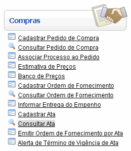
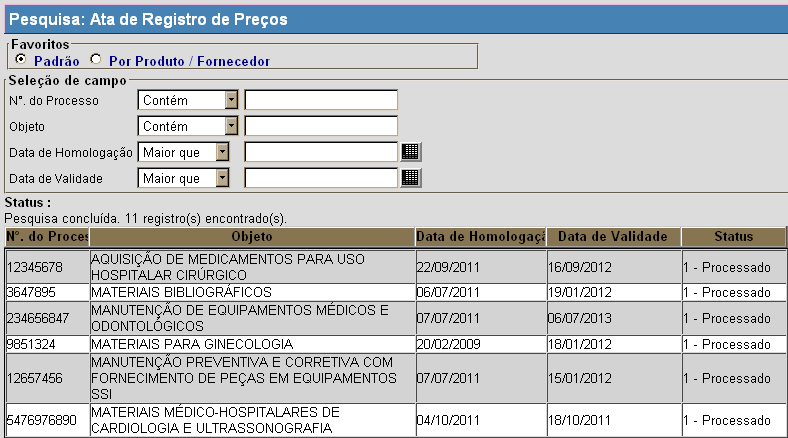
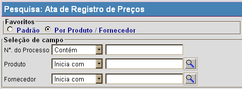

Consultar Ata [
Voltar
]
Utilize
este formulário para localizar as atas de registro de preços
cadastradas para consulta ou revisão. Para acessar esta tela, vá ao
menu "Compras" na tela
inicial e clique em "Consultar Ata".

Após clicar no nome
do formulário, o sistema abrirá a seguinte tela:

Siga os passos abaixo para pesquisar uma ata de registro de preço:
1° Passo: no topo
da tela, selecione na seção "Favoritos" o tipo de pesquisa desejada.

Cada favorito representa um tipo de pesquisa que oferece um determinado perfil de busca.
- Padrão. Este tipo de pesquisa possui os seguintes filtros:
- N°. Processo (Contém). Digite
aqui parte do número do processo para que o sistema retorne
automaticamente as atas de preço cujo número de processo contém o
conteúdo digitado.
- Objeto (Contém). Digite aqui uma palavra-chave do objeto para que o sistema retorne as atas de preço cujos objetos contêm o conteúdo digitado.
- Data de Homologação (Maior que). Digite
aqui a data-referência inicial para a pesquisa por data de homologação.
O sistema retornará todas as atas de preço cuja data de homologação é
superior à data digitada.
- Data de Validade (Maior que). Digite aqui a data-referência inicial para a pesquisa por data de validade O sistema
retornará todas as atas de preço cuja data de validade é superior à
data digitada.
- Por Produto / Fornecedor. Para exibir apenas fornecedores de natureza física. Esta pesquisa possui os seguintes filtros:
- N°. Processo (Contém). Digite
aqui parte do número do processo para que o sistema retorne
automaticamente as atas de preço cujo número de processo contém o
conteúdo digitado.
- Produto. Informe
neste campo o código do produto contido na ata que deseja localizar. Os
resultados da pesquisa retornarão todas as atas que possuam o produto
selecionado. Clique no botão
 [Procurar] para selecionar o produto a partir de uma listagem. [Procurar] para selecionar o produto a partir de uma listagem. - Fornecedor. Digite neste campo o código do produto contido na ata que deseja localizar. Os resultados da pesquisa retornarão todas as atas que possuam o fornecedor selecionado. Clique no botão [Procurar] para selecionar o produto a partir de uma listagem.
2° Passo: utilize os filtros para refinar sua
pesquisa e facilitar a localização do fornecedor desejado. Após inserir o contéudo desejado nos campos da pesquisa, os resultados da pesquisa são
exibidos automaticamente na tabela de resultados abaixo. Selecione com
um clique a ata cujo cadastro deseja visualizar. a mesmo será, então, aberta na tela Ata de Registro de Preço".
Para mais informações sobre as funcionalidades
da pesquisa, favor ver o manual Introdução
ao Sistema. Ir para o topo da
página
|